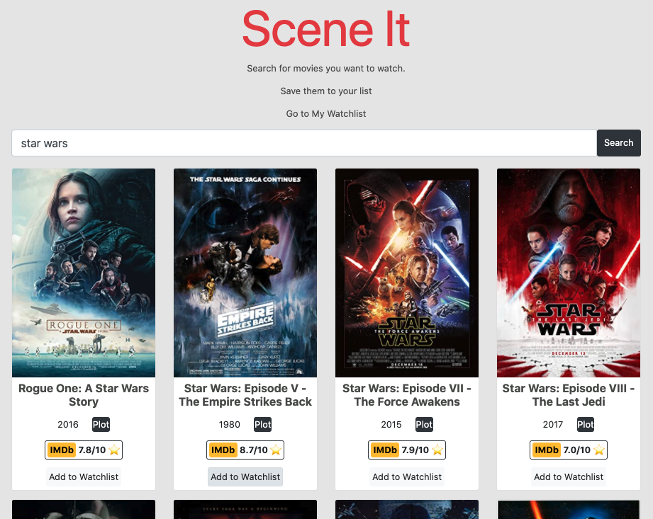
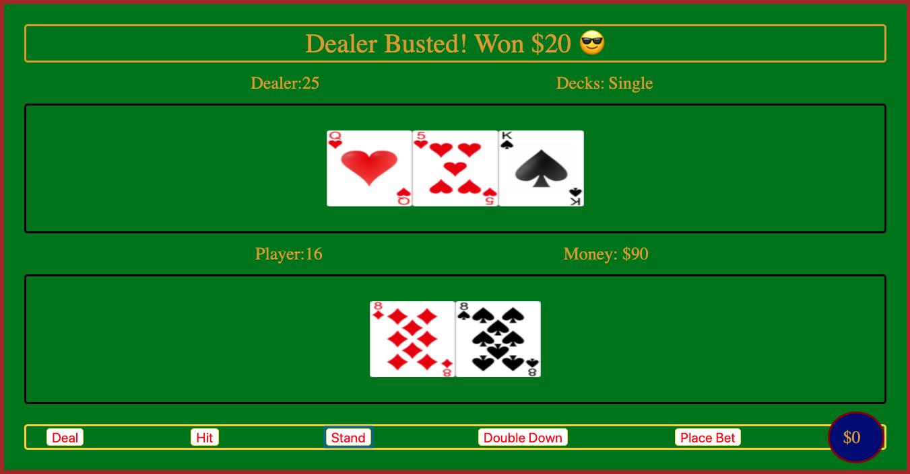
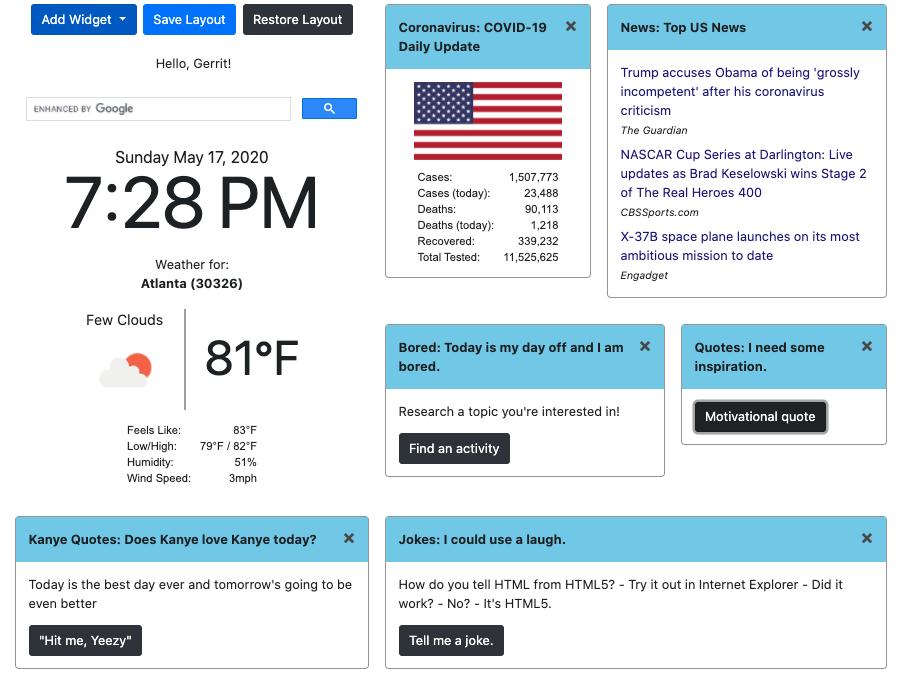
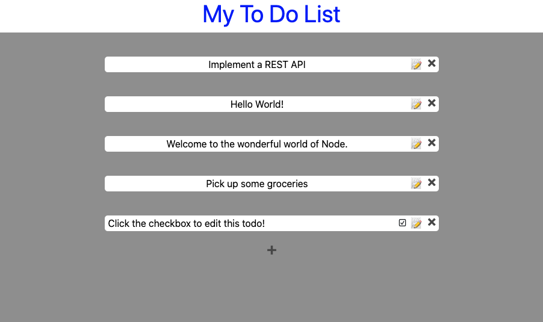

Search the OMDb API for your favorite movies and add them to your watchlist. This app was built using JavaScript, jQuery, Axios, and Bootstrap.

A Blackjack app built in vanilla JavaScript, focusing on functional programming fundamentals to build using clean, readable code.

A customizable user interface that allows the user to add, remove, adjust, and re-size a variety of widgets. Build with the Gridstack.js library with 2 teammates in a remote, Agile environment.

A simple To Do List that I built with my own API and server. This project used GET, POST, PUT, and DELETE HTTP verbs.